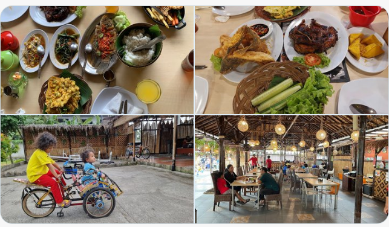

1. Nat's Kitchen Resto & Cafe

📍Jl.Pekayon
🕑 Setiap hari (10.00-22.00)
💲 15K - 50K
Menu favoritnya ada soto kuah tangkar, sate taichan telur gulung, dan sate taichan krispi. Tersedia paket makan hemat yang cocok buat rame-rame loh!
2. Saung Gandasari

📍Jl.Raya Jatiasih
🕑 Setiap hari (10.00-22.00)
💲 22K - 80K
Di sini bisa main becak mini untuk anak-anak (kids friendly). Menu makanan variatif dan harga terjangkau, dan kalau ke sini wajib cobain gurame asam manis dan ayam bakar cobek penyetnya.
3. Talaga Sampireun
📍Grand Kota Bintang
🕑 Setiap hari (10.00-22.00)
💲 35K - 100K
Rumah makan khas sunda dengan pilihan tempat lesehan yang super nyaman. Sambil makan bisa fish feeding dan naik perahu kecil keliling kolam loh.
4. Ponyo
📍Jl.Kemakmuran
🕑 Setiap hari (09.00-21.00)
💲 20K - 150K
Resep ayam di sini terkenal juara. Sambal dadak juga jadi favorit pelanggan di sini. Dilengkapi dengan fasilitas lesehan, taman bermain anak, dan kolam ikan terapi.
5. Cibiuk Resto
📍Jl.Pramuka Jembatan Nol
🕑 Setiap hari (10.00-21.00)
💲 15K - 100K
Punya sensasi makan lesehan di atas perahu yang unik banget. Kalo ke sini wajib coba gurame cobek dan nasi liwetnya, super enak!